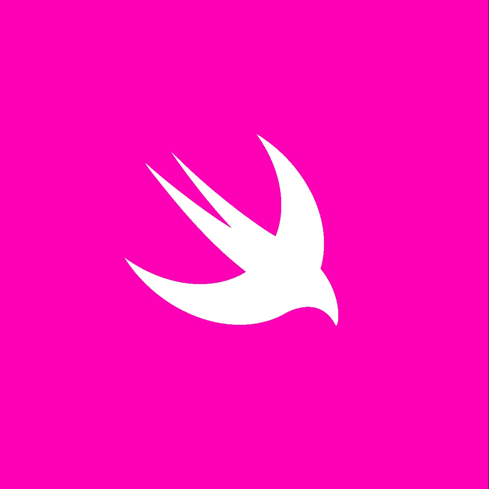

01, Jun 2024
Swift: Subscripts
Subscripts in Swift: A Powerful Tool for Custom Collections
IntroductionSubscripts are a powerful feature in Swift that allow you to access elements in custom collections using a syntax similar to accessing elements in arrays or dictionaries. By defining custom subscripts, you can create more expressive and intuitive collection types. In this post, we'll explore what subscripts are, how to define them, and when they're most beneficial.

Understanding SubscriptsA subscript is a computed property that takes an index as a parameter and returns a value of a specific type. It's used to access elements in a collection using a syntax similar to accessing elements in arrays or dictionaries.
struct MyCollection {
var items = [Int]()
subscript(index: Int) -> Int? {
get {
if index >= 0 && index < items.count {
return items[index]
} else {
return nil
}
}
set {
if let newValue = newValue {
if index >= 0 && index < items.count {
items[index] = newValue
}
}
}
}
}
In the above example, the `MyCollection` struct defines a subscript that allows you to access and modify elements in the `items` array using an index.
 Key Features of Subscripts
Key Features of Subscripts•
Customizable: You can define subscripts with any number of parameters and return types.
•
Read-only or read-write: Subscripts can be read-only (only `get`) or read-write (both `get` and `set`).
•
Type safety: Subscripts provide type safety by specifying the types of the index and the returned value.
•
Flexibility: Subscripts can be used to implement various collection behaviors, such as accessing elements by index, key, or range.
Common Use Cases•
Custom collections: Create custom collection types with specific behaviors.
•
Matrix operations: Implement matrix operations using subscripts to access elements by row and column.
•
Sparse data structures: Store sparse data efficiently using subscripts.
•
Specialized data structures: Create specialized data structures with custom access patterns.
Best Practices•
Use clear and descriptive names: Choose names for your subscripts that clearly convey their purpose.
•
Validate input: Ensure that the input to your subscripts is valid to avoid errors.
•
Consider performance implications: Subscripts can have performance implications, especially when dealing with large collections.
•
Use read-only subscripts when appropriate: If your collection should be read-only, define read-only subscripts.
Advanced Topics•
Multiple subscripts: You can define multiple subscripts with different parameters and return types.
•
Subscripts with ranges: Implement subscripts that take a range as an index.
•
Subscripts with custom types: Create subscripts that take custom types as indices.
ConclusionSubscripts are a powerful feature in Swift that allow you to create custom collection types with expressive and intuitive access patterns. By understanding how to define and use subscripts effectively, you can write more flexible and maintainable code. Remember to choose the right use cases for subscripts and consider the best practices outlined in this post.